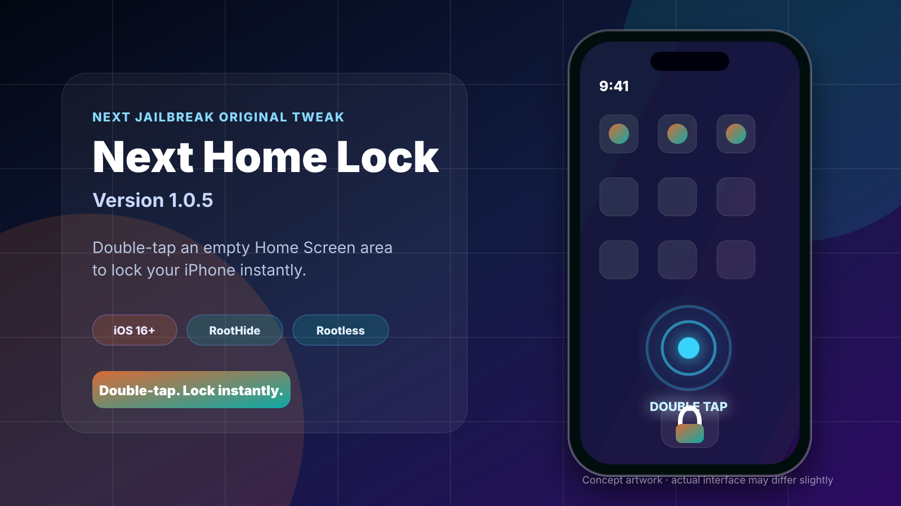
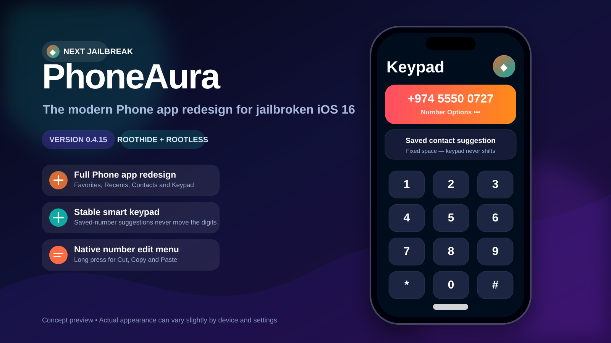

Next Home Lock 1.0.5
Double-tap empty Home Screen space to lock your iPhone. Version 1.0.5 keeps the physically verified SpringBoard method and one clean enable switch.
Read guide and downloadFind original releases, source-checked package summaries, useful roundups, complete tutorials, and rootless setup information—with direct links to original sources.
Detailed feature notes, compatibility guidance, and downloads for packages created and maintained by Next Solution.

Double-tap empty Home Screen space to lock your iPhone. Version 1.0.5 keeps the physically verified SpringBoard method and one clean enable switch.
Read guide and download
Redesign Favorites, Recents, Contacts, and Keypad with fixed saved-number suggestions, smart call filters, and the 0.4.16 stability rollback.
Read guide and downloadClear feature explanations, real interface screenshots, compatibility notes, and direct links to the original package sources.

Compare layout editors, folder upgrades, dock tools, widget cleanup, and quick actions using 16 real feature screenshots and current source notes.
See all 8 tweaks →
Review the listed features, package requirements, architectures, and installation checks for Crane Lite 1.3.18.
Read guide →
Crescendo 1.1 by Yves is listed as a Lock Screen tweak that adds a volume slider to the Lock Screen and Dynamic Island. Review its package requirements and listed##?
Read guide →
Learn what NextUp 3 version 1.1.1 adds to the now-playing UI, including upcoming-track controls for Apple Music, Podcasts, YouTube, YouTube Music, and Spotify.
Read guide →
Crane 1.3.18 is an updated package by opa334 described as providing multiple containers for applications. Review its architectures and listed dependencies.
Read guide →
CustomizeCC 1.4.3 lists Control Center options for glyph, module, toggle, launcher, background, border, overlay, and glow customization on iOS 15.
Read guide →
See how HelloKeyboardAI adds configurable AI gestures to the iPhone keyboard, with real screenshots, supported iOS versions, price, and source links.
Read guide →
IconTweak2 adds a swipe-activated control menu to Home Screen app icons. View real screenshots, compatibility, pricing, and the official package source.
Read guide →
PodsGrant can enable newer AirPods and Beats identification on older jailbroken devices. Read the important 0.5.4 and iOS 17 warnings first.
Read guide →
SwipeExtenderX adds 27 swipe and long-press actions to iOS keyboard keys. See official screenshots, compatibility, limitations, and source details.
Read guide →
Reo 4.0.1 is a customizable Lock Screen music player for jailbroken iPhones. View real layouts, preferences, price, and supported iOS versions.
Read guide →
LSLyrics 2.0 displays time-synced lyrics on the iPhone or iPad Lock Screen. See real screenshots, full-screen mode, pricing, and compatibility.
Read guide →
Phonehub 1.1.3 overhauls the jailbroken iPhone Phone app with caller ID, auto redial, dual-SIM selection, and practical call controls.
Read guide →Long-form instructions for preparation, setup, package conversion, and troubleshooting.

Jailbreak supported A12, A12X, A12Z and A13 devices with official downloads, Sileo setup, troubleshooting, and a real Next Solution iPad result.
Read the complete guideFollow the palera1n process with device requirements, preparation, installation, and troubleshooting.
Read tutorial →Browse a categorized collection of useful rootless packages with repositories and installation information.
View the collection →Understand package layouts and convert older packages for modern rootless environments.
Open conversion guide →Explore the customization areas covered by Lynx 2 and the compatibility points worth checking.
Read the review →Pair the written instructions with original videos from the official channel.